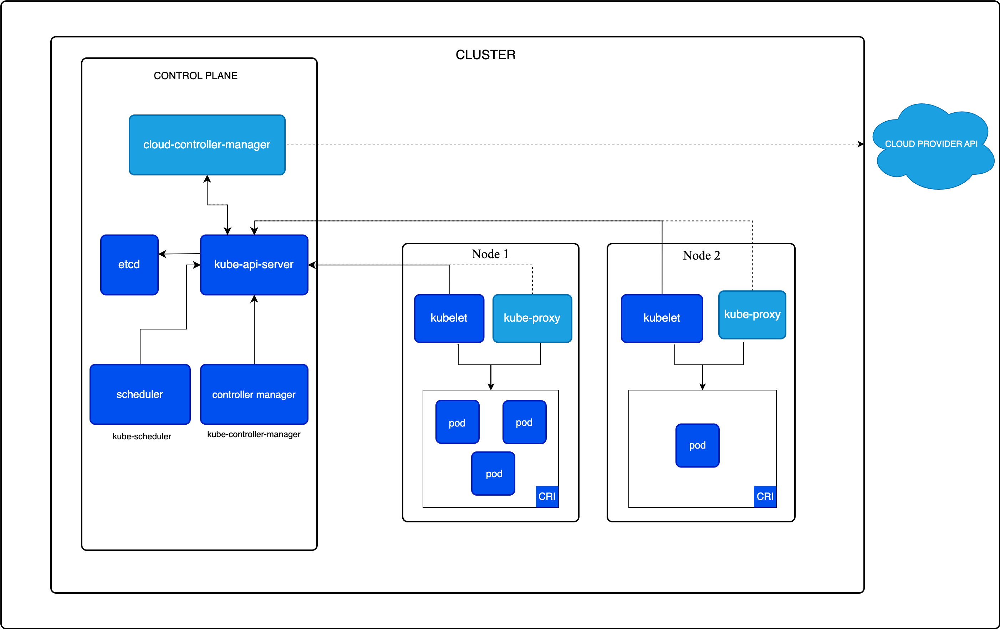

A Kubernetes cluster consists of a control plane plus a set of worker machines, called nodes, that run containerized applications. Every cluster needs at least one worker node in order to run Pods.
The worker node(s) host the Pods that are the components of the application workload. The control plane manages the worker nodes and the Pods in the cluster. In production environments, the control plane usually runs across multiple computers and a cluster usually runs multiple nodes, providing fault-tolerance and high availability.
This document outlines the various components you need to have for a complete and working Kubernetes cluster.

About this architecture
The diagram in Figure 1 presents an example reference architecture for a Kubernetes cluster. The actual distribution of components can vary based on specific cluster setups and requirements.
In the diagram, each node runs the kube-proxy component. You need a
network proxy component on each node to ensure that the Service API and
associated behaviors are available on your cluster network. However,
some network plugins provide their own, third party implementation of
proxying. When you use that kind of network plugin, the node does not
need to run kube-proxy.
Control plane components
The control plane's components make global decisions about the
cluster (for example, scheduling), as well as detecting and responding
to cluster events (for example, starting up a new pod when a Deployment's
<span class="glossary-term" data-term="replica">replicas</span>
field is unsatisfied).
Control plane components can be run on any machine in the cluster. However, for simplicity, setup scripts typically start all control plane components on the same machine, and do not run user containers on this machine. See Creating Highly Available clusters with kubeadm for an example control plane setup that runs across multiple machines.
kube-apiserver
The API server is a component of the Kubernetes control plane that exposes the Kubernetes API. The API server is the front end for the Kubernetes control plane.
The main implementation of a Kubernetes API server is kube-apiserver. kube-apiserver is designed to scale horizontally—that is, it scales by deploying more instances. You can run several instances of kube-apiserver and balance traffic between those instances.
etcd
Consistent and highly-available key value store used as Kubernetes' backing store for all cluster data.
If your Kubernetes cluster uses etcd as its backing store, make sure you have a back up plan for the data.
You can find in-depth information about etcd in the official documentation.
kube-scheduler
Control plane component that watches for newly created Pods with no assigned node, and selects a node for them to run on.
Factors taken into account for scheduling decisions include: individual and collective resource requirements, hardware/software/policy constraints, affinity and anti-affinity specifications, data locality, inter-workload interference, and deadlines.
kube-controller-manager
Control plane component that runs controller processes.
Logically, each controller is a separate process, but to reduce complexity, they are all compiled into a single binary and run in a single process.
There are many different types of controllers. Some examples of them are:
- Node controller: Responsible for noticing and responding when nodes go down.
- Job controller: Watches for Job objects that represent one-off tasks, then creates Pods to run those tasks to completion.
- EndpointSlice controller: Populates EndpointSlice objects (to provide a link between Services and Pods).
- ServiceAccount controller: Create default ServiceAccounts for new namespaces.
The above is not an exhaustive list.
cloud-controller-manager
A Kubernetes control plane component that embeds cloud-specific control logic. The cloud controller manager lets you link your cluster into your cloud provider's API, and separates out the components that interact with that cloud platform from components that only interact with your cluster.
The cloud-controller-manager only runs controllers that are specific to your cloud provider. If you are running Kubernetes on your own premises, or in a learning environment inside your own PC, the cluster does not have a cloud controller manager.
As with the kube-controller-manager, the cloud-controller-manager combines several logically independent control loops into a single binary that you run as a single process. You can scale horizontally (run more than one copy) to improve performance or to help tolerate failures.
The following controllers can have cloud provider dependencies:
- Node controller: For checking the cloud provider to determine if a node has been deleted in the cloud after it stops responding
- Route controller: For setting up routes in the underlying cloud infrastructure
- Service controller: For creating, updating and deleting cloud provider load balancers
Node components
Node components run on every node, maintaining running pods and providing the Kubernetes runtime environment.
kubelet
An agent that runs on each node in the cluster. It makes sure that containers are running in a Pod.
The kubelet takes a set of PodSpecs that are provided through various mechanisms and ensures that the containers described in those PodSpecs are running and healthy. The kubelet doesn't manage containers which were not created by Kubernetes.
kube-proxy (optional)
kube-proxy is a network proxy that runs on each node in your cluster, implementing part of the Kubernetes Service concept.
kube-proxy maintains network rules on nodes. These network rules allow network communication to your Pods from network sessions inside or outside of your cluster.
kube-proxy uses the operating system packet filtering layer if there is one and it's available. Otherwise, kube-proxy forwards the traffic itself. If you use a network plugin that implements packet forwarding for Services by itself, and providing equivalent behavior to kube-proxy, then you do not need to run kube-proxy on the nodes in your cluster.
Container runtime
A fundamental component that empowers Kubernetes to run containers effectively. It is responsible for managing the execution and lifecycle of containers within the Kubernetes environment.
Kubernetes supports container runtimes such as containerd, CRI-O, and any other implementation of the Kubernetes CRI (Container Runtime Interface).
Addons
Addons use Kubernetes resources (DaemonSet, Deployment, etc) to implement cluster
features. Because these are providing cluster-level features, namespaced
resources for addons belong within the kube-system
namespace.
Selected addons are described below; for an extended list of available addons, please see Addons.
DNS
While the other addons are not strictly required, all Kubernetes clusters should have cluster DNS, as many examples rely on it.
Cluster DNS is a DNS server, in addition to the other DNS server(s) in your environment, which serves DNS records for Kubernetes services.
Containers started by Kubernetes automatically include this DNS server in their DNS searches.
Web UI (Dashboard)
Dashboard is a general purpose, web-based UI for Kubernetes clusters. It allows users to manage and troubleshoot applications running in the cluster, as well as the cluster itself.
Container resource monitoring
Container Resource Monitoring records generic time-series metrics about containers in a central database, and provides a UI for browsing that data.
Cluster-level Logging
A cluster-level logging mechanism is responsible for saving container logs to a central log store with a search/browsing interface.
Network plugins
Network plugins are software components that implement the container network interface (CNI) specification. They are responsible for allocating IP addresses to pods and enabling them to communicate with each other within the cluster.
Architecture variations
While the core components of Kubernetes remain consistent, the way they are deployed and managed can vary. Understanding these variations is crucial for designing and maintaining Kubernetes clusters that meet specific operational needs.
Control plane deployment options
The control plane components can be deployed in several ways:
- Traditional deployment
- Control plane components run directly on dedicated machines or VMs, often managed as systemd services.
- Static Pods
- Control plane components are deployed as static Pods, managed by the kubelet on specific nodes. This is a common approach used by tools like kubeadm.
- Self-hosted
- The control plane runs as Pods within the Kubernetes cluster itself, managed by Deployments and StatefulSets or other Kubernetes primitives.
- Managed Kubernetes services
- Cloud providers often abstract away the control plane, managing its components as part of their service offering.
Workload placement considerations
The placement of workloads, including the control plane components, can vary based on cluster size, performance requirements, and operational policies:
- In smaller or development clusters, control plane components and user workloads might run on the same nodes.
- Larger production clusters often dedicate specific nodes to control plane components, separating them from user workloads.
- Some organizations run critical add-ons or monitoring tools on control plane nodes.
Cluster management tools
Tools like kubeadm, kops, and Kubespray offer different approaches to deploying and managing clusters, each with its own method of component layout and management.
Customization and extensibility
Kubernetes architecture allows for significant customization:
- Custom schedulers can be deployed to work alongside the default Kubernetes scheduler or to replace it entirely.
- API servers can be extended with CustomResourceDefinitions and API Aggregation.
- Cloud providers can integrate deeply with Kubernetes using the cloud-controller-manager.
The flexibility of Kubernetes architecture allows organizations to tailor their clusters to specific needs, balancing factors such as operational complexity, performance, and management overhead.
What's next
Learn more about the following:
- Nodes and their communication with the control plane.
- Kubernetes controllers.
- Garbage collection of cluster objects.
- kube-scheduler which is the default scheduler for Kubernetes.
- Etcd's official documentation.
- Several container runtimes in Kubernetes.
- Integrating with cloud providers using cloud-controller-manager.
- kubectl commands.